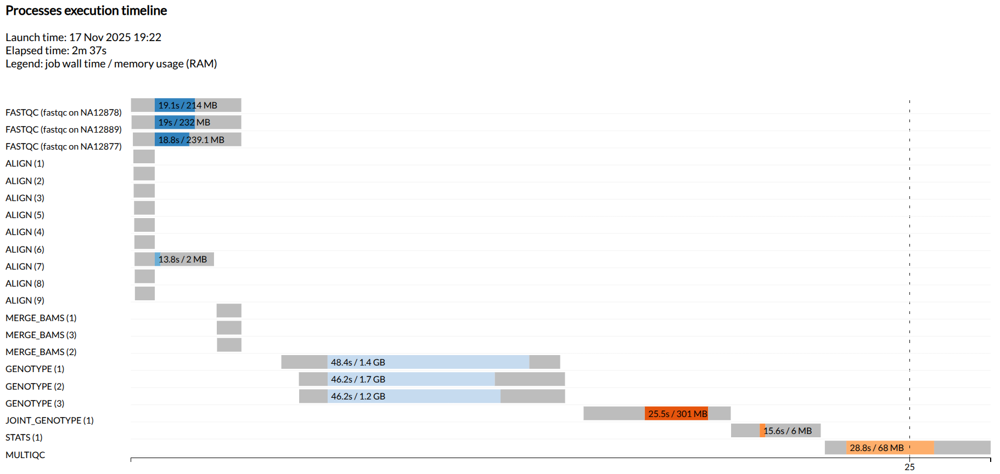

Scale to multiple samples
Learning objectives
- Apply an optimised pipeline across multiple samples
- Understand sample-level and within-sample parallelism
- Recall best practices for running multi-sample data with samplesheets
Now that we have a pipeline that runs successfully and is configured for our HPC according to a representative sample, we will proceed to run it on all samples in our simplified dataset.
Nextflow's "dataflow" model and channels makes this easy to execute. Unlike the exercises where we added multi-threading and scatter-gather parallelisation, we do not need to edit the workflow code to scale our analysis to include more samples. This is one of the many great advantages to Nextflow.
Every additional sample can run through all per-sample processing tasks independently and in parallel, using the same code and resources we've configured. For more information, refer to the Nextflow for the Life Science's explainers on queue channels and input samplesheets.
2.7.1 Applying at scale
In order to run all samples, we need to supply the workflow with a samplesheet that contains metadata for all samples in the workflow. The samplesheet we have used for our testing and development includes one sample only.
We will now switch to the full samplesheet. Note that careful and error-free construction of a samplesheet is just as important as the workflow codebase. Errors within the samplesheet can be a source of early or late workflow failure, so care at this stage can avoid frustration downstream.
We will now replace the samplesheet we have provided as a parameter to the workflow, and include the -resume flag so that the sample already processed during workflow development is not wastefully re-run.
Exercise: Running on all samples
- Update your
run.shscript to provide thesamplesheets_full.csvfile as argument to the--samplesheetparameter:
- Save your script and re-run!
Your output should now look something like this:
N E X T F L O W ~ version 24.04.5
Launching `main.nf` [irreverent_hilbert] DSL2 - revision: 029efd6fbc
executor > pbspro (22)
[8c/d3131f] FASTQC (fastqc on NA12889) [100%] 3 of 3 ✔
[82/38ccb6] SPLIT_FASTQ (split fastqs for NA12877) [100%] 3 of 3 ✔
[e2/7a1203] ALIGN_CHUNK (2) [100%] 9 of 9 ✔
[48/38ee62] MERGE_BAMS (3) [100%] 3 of 3 ✔
[28/88ea07] GENOTYPE (1) [100%] 3 of 3 ✔
[31/bff8ce] JOINT_GENOTYPE (1) [100%] 1 of 1 ✔
[e0/2769b4] STATS (1) [100%] 1 of 1 ✔
[de/544e91] MULTIQC [100%] 1 of 1 ✔
Completed at: 12-Nov-2025 09:34:02
Duration : 6m 2s
CPU hours : 0.1
Succeeded : 22
N E X T F L O W ~ version 24.10.0
Launching `main.nf` [fabulous_panini] DSL2 - revision: 029efd6fbc
executor > slurm (22)
[e6/da7692] FASTQC (fastqc on NA12877) [100%] 3 of 3 ✔
[f0/fadc47] SPLIT_FASTQ (split fastqs for NA12878) [100%] 3 of 3 ✔
[74/bced2a] ALIGN_CHUNK (6) [100%] 9 of 9 ✔
[84/1bd560] MERGE_BAMS (1) [100%] 3 of 3 ✔
[2f/2d96be] GENOTYPE (1) [100%] 3 of 3 ✔
[b8/f88205] JOINT_GENOTYPE (1) [100%] 1 of 1 ✔
[6e/165917] STATS (1) [100%] 1 of 1 ✔
[65/432772] MULTIQC [100%] 1 of 1 ✔
Completed at: 12-Nov-2025 07:32:34
Duration : 4m 32s
CPU hours : (a few seconds)
Succeeded : 22
2.7.2 Sanity checking workflow execution
We have spent all our time so far optimising the workflow to execute efficiently on one sample. We should also make some sanity checks after scaling up a run. As we have learnt, bioinformatics workflows typically contain some parts that can be parallelised within a single sample, some parts that can only be parallel by sample, and some parts that must collectively analyse all samples together (i.e. no parallelisation).
It may be difficult to observe any logic failures when only a single sample is used for development and testing. If you have a large sample cohort, the final stage of testing prior to submitting the full workflow at maximum scale should be to test on a handful of samples. This is what we are doing in today's final exercise.
Note that in real life, we would need to complete another round of benchmarking and resource optimisation to scale to the full genome (we have used only 3 of the smaller chromosomes) and full sequencing depth (we have used a small subset of sequence data per sample). However, thanks to the hard work we have put in place creating modular, dynamic, well-configured code, this would be a swift task.
Exercise: Inspecting the timeline
-
Download the timeline file to your local computer and view it in your local browser (on VS Code, right click the file within the
runInfofolder and selectDownload). -
Which processes were run in parallel?
Show timeline

The timeline clearly shows that our workflow logic was correct and processes are being run in the expected number, in the expected order and at the expected stage of execution:
- Parallel by sample execution of
FASTQC,MERGE_BAMSandGENOTYPE - Scattered paralellisation of
ALIGN, with 3 parallel alignment tasks for each of the 3 samples - The non-parallel downstream data combining steps of
JOINT_GENOTYPE,STATSandMULTIQCrun once only and in order for the workflow
Tip
The placement of tasks on this timeline can show potential errors, for example if the scattered ALIGN tasks were waiting for the previous align task to finish before commencing. This could suggest a resource availability issue: are there enough free resources on your compute platform to run >1 ALIGN task at once? Or it could suggest a channel issue, where incorrect syntax was causing a process to wait for input data it did not need.
Another important check is to verify your workflow outputs are correct and what you are expecting to produce. This is out of scope for this workshop, but of critical importance to perform thoroughly (ideally on a few full-sized sample where possible) prior to expending a large amount of HPC service units on a full-scale run.
2.7.3 Matching HPC allocation to the scale required
Of final note is the concept of service units and other compute resources, and their importance to running your Nextflow workflow on HPC. We have mentioned service units throughout this workshop as one of the reasons why workflow optimisation is important. Here we will expand on this slightly and also list other recommendations to check before submitting your workflow at full scale.
Both Gadi and Setonix allocate a finite amount of service units to research projects to spend on these HPCs. Service units are finite due to the fact that a machine has a finite amount of resource hours within a time period (typically a quarter on HPC). The system administrators divvy up the amount of available hours (total system cores X hours within the quarter) among projects to ensure equitable access.
Before submitting a full-scale workflow on HPC, it is important to first check that your project has sufficient service units to run the workflow. You can use your benchmarking trace reports to help estimate the amount required. If your project runs out of service units part way through workflow execution, jobs may be held, rejected by the scheduler resulting in premature workflow termination, or downgraded to low priority. Planning your compute work and applying for service units ahead of time can help avoid frustrating delays due to insufficient resources. Visit the NCI job costs page and the Pawsey accounting page for more information on service units and their calculation on these systems.
Finally, it is important to also consider the scratch disk resources your workflow outputs will require. Physical disk usage as well as the total number of files and folders (referred to as "inodes") are monitored on HPC to ensure high performance of the I/O filesystem is maintained. Just as running out of service units can halt your workflow execution, so too can surpassing these per-project disk limits. Extrapolating disk requirements from your benchmark samples and multiplying those requirements by ~ 1.2 - 1.5 (to allow for failed runs, complex samples, and additional ad-hoc post-processing) is a reasonable approach to estimating the scratch disk requirement for your full-scale workflow.
2.7.4 Workflow adaptability
When developing and running workflows on "real" data, input data is rarely uniform. While the sample data used here was intentionally consistent, actual data sets often contain variation in file size, formats, sequencing depth, metadata etc. These differences can impact performance and potentially require updating the workflow structure (main.nf, modules) and resourcing (custom configuration files) to suit.
Configuration is an iterative process - get it right for a representative sample, scale up first to a few and then to all samples, iterate and optimise as you go. Using dynamic resourcing strategies and customised trace reports can simplify the tweaks that will be inadvertently required over time and use cases.